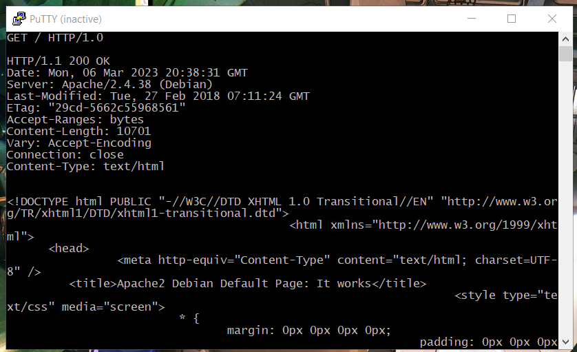
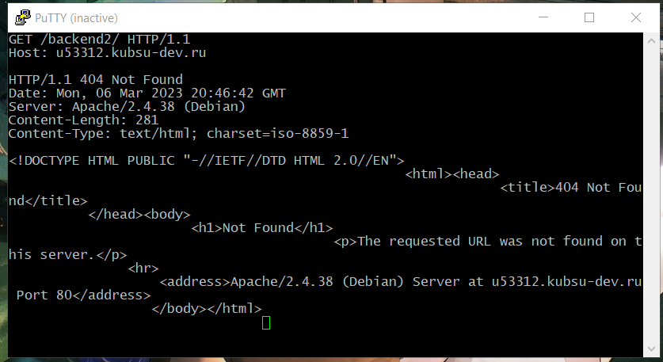
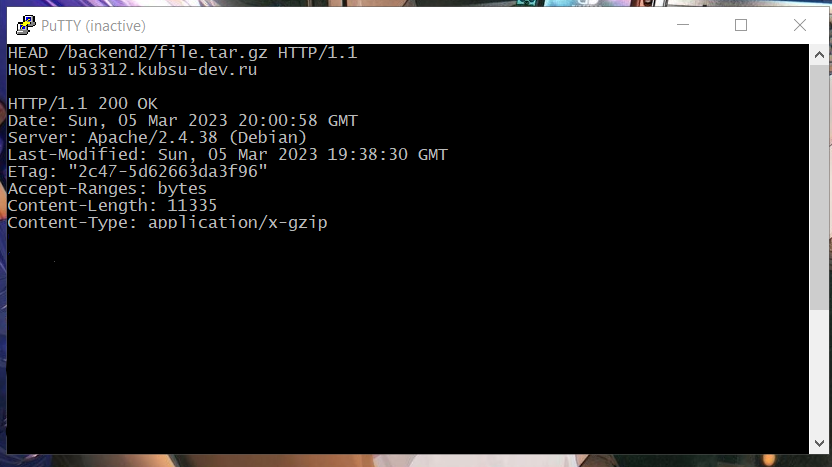
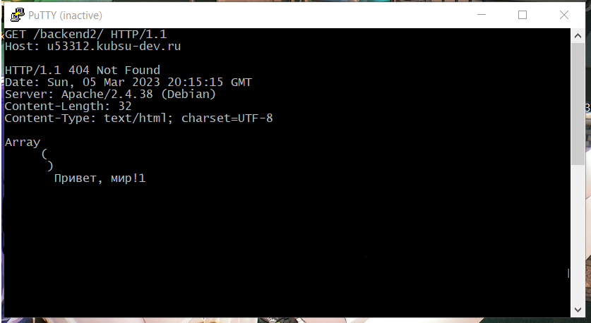
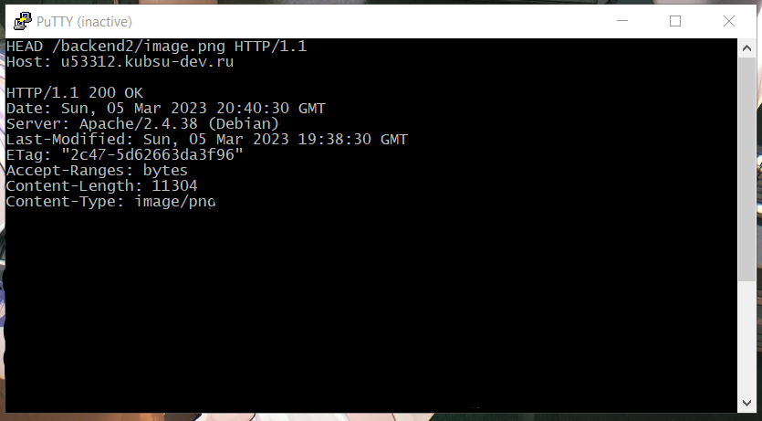

Шаг 1:
Подключение к учебному серверу
212.192.134.20 (kubsu-dev.ru) по SSH с помощью клиента Putty, команды ssh или онлайн-версии ssh-клиента.
SSH - это протокол удаённого управления компьютером(удалённого администрирования)

Шаг 2:
Вводим наши логин и пароль от сервера.


Шаг 3:
Ping - утилита для проверки целостности и качества соединения.
С помощью команды ping на учебном сервере узнаем IP-адрес веб-сервера kubsu.ru.

Шаг 4:
Команда nslookup — инструмент сетевого администрирования для запросов в доменной
системе имен (DNS) с целью получения доменного имени, IP-адреса
или другой информации из записей DNS.
MX-запись - тип DNS-записи, предназначенный для маршрутизации электронной почты с использованием протокола
SMTP(Simple Mail Transfer Protocol — простой протокол передачи почты).
При создании электронной почты в ресурсных записях прописывают MX-записи.А-запись позволяет найти IP-адрес.
MX-запись - это информация о домене, указывающая на сервер, который обрабатывает почту.


Шаг 5:
С помощью команда whois узнали дату регистрации домена
и другие регистрационные данные по введённому домену.